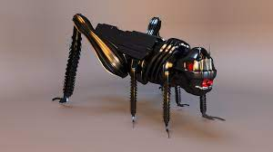

| Fecha Hora | Comuna | Sector | Tipo | Total Fotos |
|---|---|---|---|---|
| 2001-04-16 13:37 | Puchuncavi | Verduleria | Insecto | 
|
| 2064-05-13 14:59 | Regimiento 4 | Auditorio Virtual | Insecto |  |
| 2021-04-16 12:54 | Lo Barnechea | Mi casa | Miriapodo | |
| 2019-10-17 00:00 | Via Lactea | Planeta tierra | Miriapodo |  |
| (-13.800m)-00-00 00:00 | Universo | Unico | Aracnido |  |